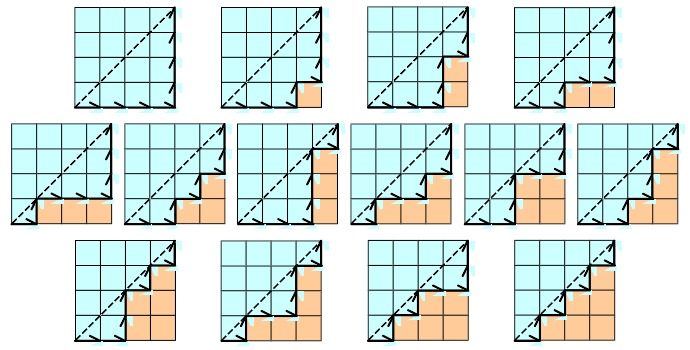
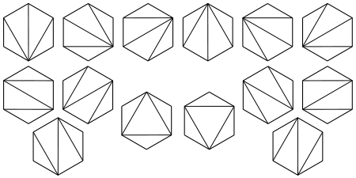

Hankel Transform of Linear Combinations of Catalan Numbers. (Seminar Talk in 2010)
Catalan numbers or the sequence of 1, 1, 2, 5, 14, 42, 132, 429 is one of the most widely used sequence in the world.
Its recurrence relation can be defined as \( C_{n+1} = \sum_{i=0}^{n} C_i C_{n-i} \) for \( n >= 1 \) and the base case is \( C_0 = 1. \)
The sequence holds a vast number of interpretations from mathematics to computer science. For example,
\( C_n \) is the number of different monotonic path in an n-by-n square, the number of ways to cut a (n+2)-sided convex polygon into n triangles,
or the number of full binary trees with n+1 leaves...



Given an integer sequence \( A = {a_0, a_1, a_2, ...}\), the Hankel matrix \( H \) can be defined as an infinite square matrix,
$$H = \begin{pmatrix}a_0 & a_1 & a_2 & ...\\\ a_1 & a_2 & a_3 & ...\\\ a_2 & a_3 & a_4 & ... \\\ \vdots & \vdots & \vdots & \ddots \end{pmatrix}$$
The Hankel determinant \( h_n \) of order \( n \) is the determinant of the upper-left \( n \) by \( n \) submatrix of \( H \). For examples:
$$h_1 = \begin{vmatrix}a_0 \end{vmatrix}=a_0, \quad h_2 = \begin{vmatrix}a_0 & a_1 \\\ a_1 & a_2\end{vmatrix}=a_0a_2-a_1a_1, ...$$In mathematics, we define Hankel transform as a sequence transform that returns successive Hankel determinants formed by the original sequence, \( H\{A\} = \{h_1, h_2, h_3, ...\}. \)
Now, you must be wondering, what is the Hankel transform of the Catalan number sequence? What is the Hankel transform of the adjacent Catalan number sequences... and more?
Miraculously...
$$ H\{C_n\} = \{1, 1, 1, 1, ...\}$$ $$ H\{C_n+C_{n+1}\} = \{2, 5, 13, 34, ...\} \quad \text{every other Fibonacii number!}$$ $$\vdots$$Can we prove them? (Seminar Talk in 2010)